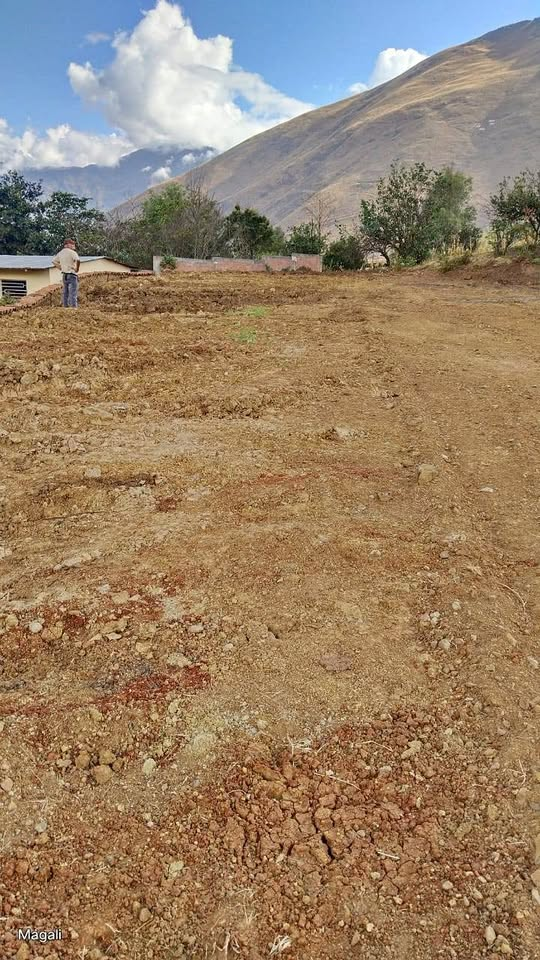

Precio desconocido 1,700 m²

OCASIÓN: Se vende terreno de 1700 mt2, a 1/2 hora de Huánuco (AGLLAHUANCA), del recreo Hatun Rumi a 12 minutos hacia arriba, terreno apto para sembrar cualquier producto, tierra descansada por más de 15 años, cuenta con agua de regadío, también está para instalar agua potable. Inscrito en registros públicos, trato directo con el dueño. S/. 110 soles mt2, cel. [hidden information].